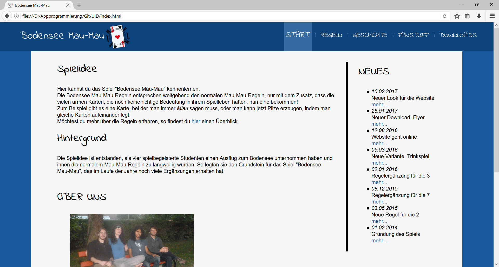
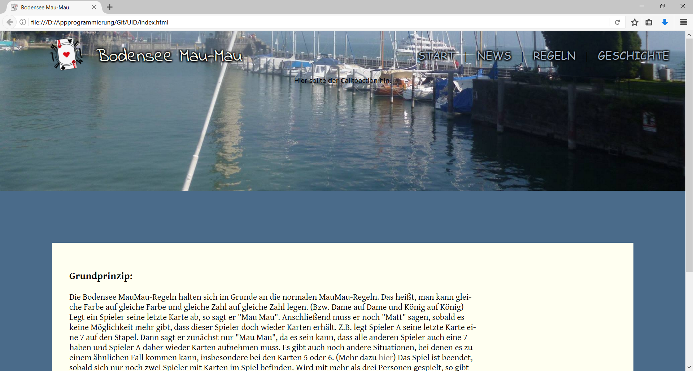
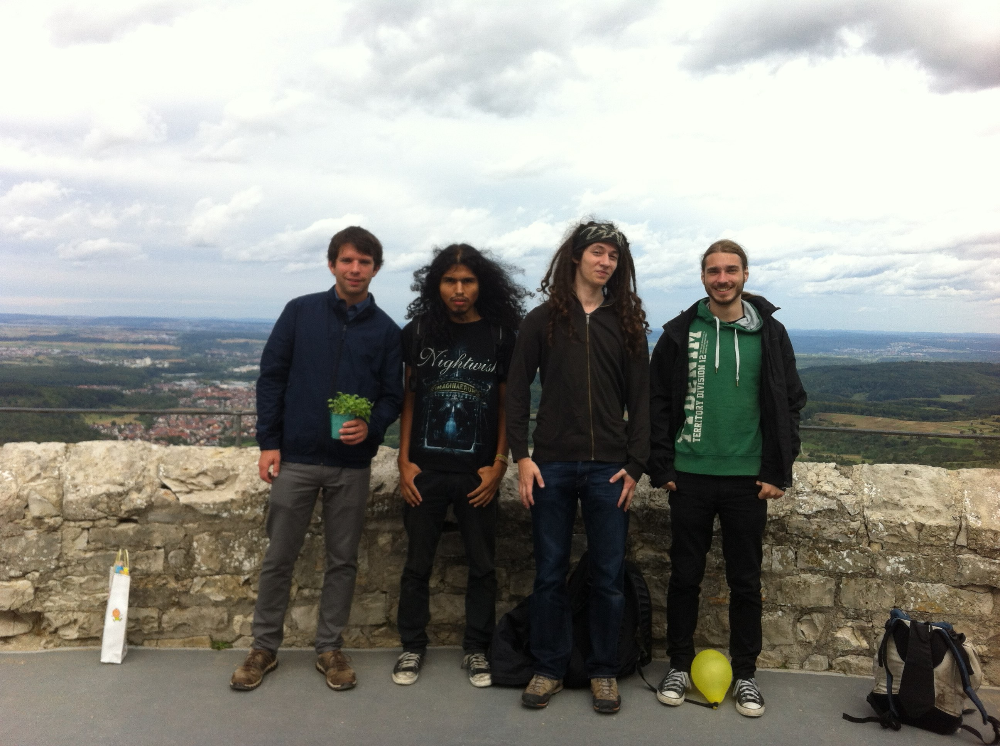
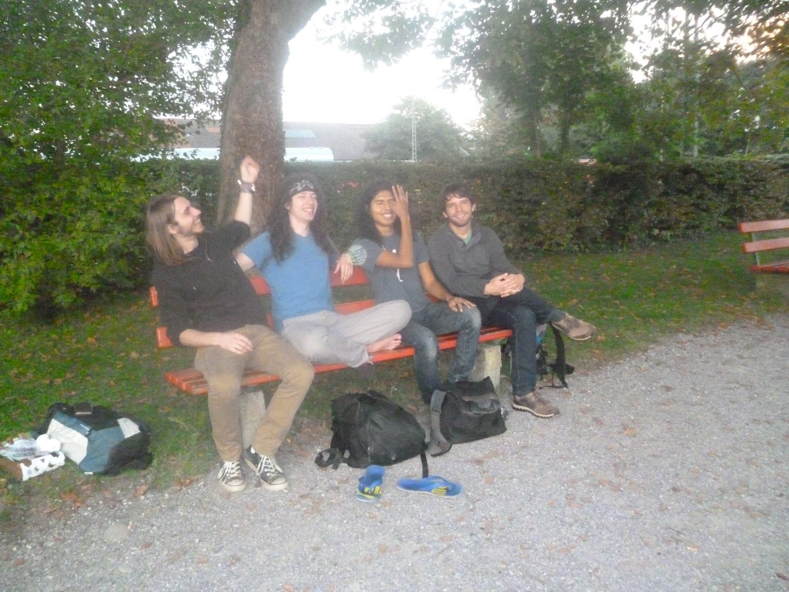

10.02.2017: Die Website hat einen neues Design bekommen! Nach weniger als zwei Monaten
wurde das alte, schon leicht eingestaubte, Design überarbeitet und aufgefrischt. Außerdem wurde der Bereich
News der Startseite hinzugefügt. Hier bekommst du die aktuellsten Neuigkeiten der Website in
kompakter Form angezeigt. Die alte Seite News wurde dafür entfernt.

10.02.2017: Screenshot der aktuellen Startseite
2016
♦ Website geht online ♦
23.12.2016: Die lang erwartete Website zum Spiel Bodensee Mau-Mau ist endlich
fertig! Nun kannst du endlich das komplette Regelwerk jederzeit nachlesen, oder dich über die Entstehung des
Spiels informieren.

23.12.2016: Screenshot der alten Startseite
♦ Neue Regel ♦
09.09.2016: Nach einer spannenden Partie Bodensee Mau-Mau haben sich die Gründer
und noch eine zusätzliche Person entschieden, der Spielkarte 3 nun auch eine Bedeutung zu geben. Sie kann
immer gespielt werden und hebt die Wirkung der darunterliegenden Karte auf.
Wenn du mehr darüber erfahren möchtest, findest du hier
eine ausführlichere Beschreibung.
09.09.2016: Die Spielkarte 3 hat eine eigene Regel bekommen
2015
♦ Auf Burgentrip ♦
15.09.2015: Als ausgefallenes und leicht verspätetes Geburtstagsgeschenk, gab es einen
Burgentrip. Zuerst wurde die Burg Hohenneuffen, danach die Burg Teck besucht. Dabei wurde die wunderbare
Aussicht, sowie ein mitgebrachtes Vesper genossen. Als grönenden Abschluss gab es einen veganen Kuchen auf
dem Gelände der Burg Teck.

15.09.2015: Die Gründer auf Burgentrip: Jeff, Johnny, Jacky und Toni
(v.l.n.r)
2014
♦ Entstehung des Spiels ♦
18.09.2014: Vier spielbegeisterte Studenten auf einem Ausflug zum Bodensee. Die normalen
Mau-Mau-Regeln fangen schnell an sie zu langweilen. So legten sie den Grundstein für das Spiel Bodensee
Mau-Mau, das im Laufe der Jahre noch viele Ergänzungen erhalten hat.

18.09.2014: Die Gründer des Spiels: Toni, Jacky, Johnny und Jeff (v.l.n.r)